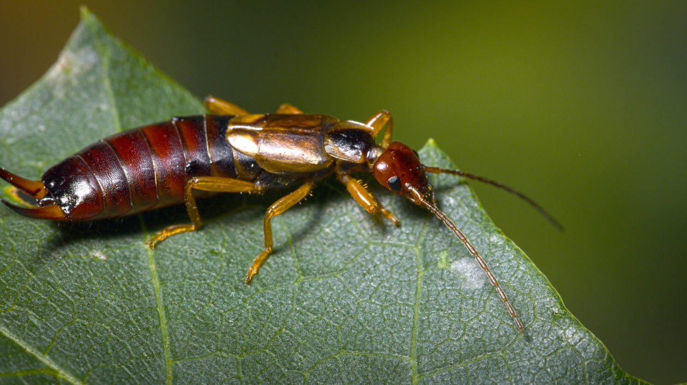
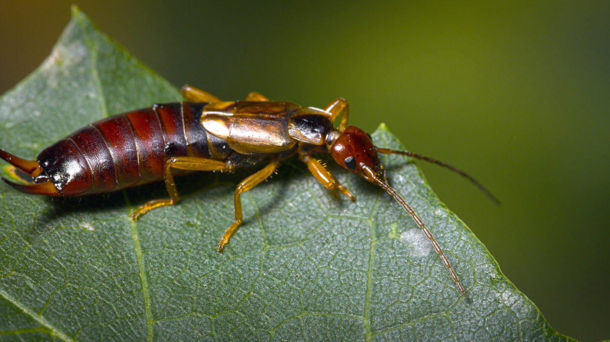

| Letter | Insect | City | River |
|---|---|---|---|
| P | Proturans | Pennsylvania | Pocasset River |
| A | Alderflies | Albama | Amnicon River |
| L | Lacewings | Los Vegas | La Crosse River |
| A | Antlions | Arlington | Amite River |
| L | Leaf insects | Los Angeles | La Moine River |
| E | Earwigs | Enid | Eek River |
Proturans
Proturans are seldom seen soil animals, under 2mm long. They lack pigment, wings, eyes and antennae and are considered to be an ancient sister group to insects, alongside Collembola and Diplura. But the data collected so far has been ambiguous. Some studies suggest that all of the Entognatha are more closely related genetically to crustaceans than Hexapoda.
Proturans Page
Antlions
The antlions are a group of about 2,000 species of insect in the neuropteran family Myrmeleontidae. They are known for the predatory habits of their larvae, which mostly dig pits to trap passing ants or other prey. In North America, the larvae are sometimes referred to as doodlebugs because of the marks they leave in the sand.
Antlions PageEarwigs
Earwigs make up the insect order Dermaptera. With about 2,000 species in 12 families, they are one of the smaller insect orders. Earwigs have characteristic cerci, a pair of forcep-like pincers on their abdomen, and membranous wings folded underneath short, rarely used forewings, hence the scientific order name, "skin wings".
Earwigs Page